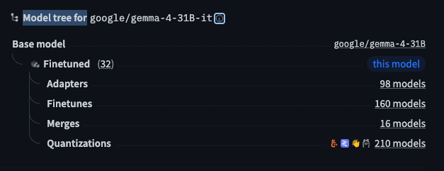

Hugging Face with llamacpp Usage
Hugging Face Hub is the default marketplace for open-weight models. For local inference with llama.cpp, you rarely need the full PyTorch checkpoint—you usually want a curated GGUF build, a clear model lineage, and a short list of organizations worth following.
This note covers four workflows:
- Subscribe to key organizations so new releases surface in your feed.
- Read the model tree and tags before you download anything.
- Pick the right GGUF files (text weights vs. vision projector).
- Download with
huggingface-cliand serve withllama-server.
Following organizations on the Hub
The Hub groups models by publisher (organization/model-name). Following an org is the fastest way to notice new base models, quantizations, and community repacks.
Subscribe to these organizations first—they cover most models you will run locally:
| Organization | Typical models | Why follow |
|---|---|---|
| Gemma, Gemma 3/4, T5, SigLIP | Google open-weight releases | |
| meta-llama | Llama 2/3/3.x | Meta Llama family |
| Qwen | Qwen2, Qwen2.5, Qwen3, QwQ | Strong multilingual OSS LLMs |
| deepseek-ai | DeepSeek-V2/V3, R1 distillations | Reasoning and MoE checkpoints |
| mistralai | Mistral, Mixtral, Codestral | Efficient European OSS models |
| microsoft | Phi-3/4, Florence, Phi-vision | Small models and vision stacks |
| stabilityai | Stable Diffusion, SDXL | Image generation |
| openai | whisper, CLIP (legacy OSS) | ASR and embedding baselines |
| nvidia | Nemotron, NIM-related weights | Enterprise-oriented releases |
| unsloth | Fast fine-tunes and GGUF repacks | Community-optimized quantizations |
| bartowski | Llama/Mistral GGUF quantizations | Widely used Q4_K_M builds |
| lmstudio-community | GGUF bundles for desktop tools | Pre-quantized desktop-friendly sets |
On any org page, click Follow (top right). Your home feed then shows new repos, updated quantizations, and trending forks without manual search.
Model tree and lineage
When a checkpoint is a fine-tune, LoRA merge, adapter, or quantized derivative, authors can declare a base model in the model card metadata. The Hub renders this as a model tree: upstream base at the root, derivatives as children.

What to look for on the tree:
- Base model — the original full-precision checkpoint (e.g.
google/gemma-2-9b-it). - Adapters / fine-tunes — task-specific heads or instruction-tuned forks.
- Quantizations — GGUF/GPTQ/AWQ builds; often the tag you care about for llama.cpp.
-
Quantization nodes
The
quantizationstag (and linked GGUF repos) is where local-inference users spend most of their time. A single base model may have dozens of community quantizations (Q4_K_M,Q5_K_S,IQ4_XS, etc.). Prefer publishers you trust (official org quant,unsloth,bartowski) and check:- file size vs. your VRAM/RAM budget;
- whether the build is text-only or includes a separate mmproj for vision;
- commit date and download count (stale or empty repos are common).
If the tree shows no quantizations, search the Hub for
ggufplus the base model name—quantizers often publish under their personal org.
Reading model tags on the model card
Tags are shorthand for task, modality, framework, and license. They appear as colored pills below the model name.
| Domain | Tag | Meaning | Example |
|---|---|---|---|
| NLP | text-generation | Causal LM, chat, completion | Llama, Gemma, Qwen |
| text-classification | Single-label or multi-label classification | BERT-style heads | |
| fill-mask | Masked language modeling | BERT, RoBERTa | |
| token-classification | NER, POS tagging | ||
| question-answering | Extractive QA | ||
| summarization | Abstractive / extractive summary | ||
| translation | Machine translation | NLLB, M2M100 | |
| feature-extraction | Embeddings | sentence-transformers | |
| Computer | image-classification | Image classification | ViT, ConvNeXt |
| vision | object-detection | Bounding-box detection | DETR, YOLO exports |
| image-segmentation | Semantic / instance segmentation | ||
| image-to-image | Style transfer, enhancement | ||
| depth-estimation | Monocular depth | ||
| Multimodal | image-text-to-text | Image + text in, text out | Gemma 3/4, LLaVA |
| text-to-image | Text in, image out | Stable Diffusion | |
| visual-question-answering | VQA | ||
| document-question-answering | Doc QA over PDFs / layouts | ||
| Audio | automatic-speech-recognition | Speech-to-text | Whisper |
| text-to-speech | TTS | ||
| audio-classification | Audio event / scene labels |
Other tags worth noting:
- License —
apache-2.0,mit,llama2,gemma, etc.; governs commercial use. - Library —
transformers,gguf,safetensors; tells you which runtime to expect. - Size — parameter count band (
7B,70B); sanity-check against your hardware.
For llama.cpp, confirm the repo actually ships .gguf (or follow a linked quantization repo) before you clone multi-gigabyte Safetensors by mistake.
GGUF format: text weights vs. vision projector
GGUF is the native container for llama.cpp. Multimodal models are often split into two files:
| File role | Typical name pattern | Contents | Quantization strategy |
|---|---|---|---|
| Main (LLM) | *-Q4_K_M.gguf |
Transformer language model | Aggressive (Q4/Q5) for VRAM |
| Projector (vision) | mmproj-*.gguf, *-mmproj-* |
Vision encoder → LLM hidden states | Prefer F16/BF16; avoid heavy quant |
-
Why two quantization strategies?
The language model dominates memory and compute, so aggressive quantization (e.g.
Q4_K_M) is usually acceptable with modest quality loss.The vision projector is smaller but more sensitive: aggressive quant can collapse alignment between image patches and token embeddings. Community practice:
- Main LLM:
Q4_K_MorQ5_K_Mfor a balance of size and quality. - mmproj:
F16orBF16when available; only fall back to mild quant if RAM is tight.
Download both files from the same publisher and revision when possible—mixed sources sometimes break template or image-size assumptions.
- Main LLM:
Downloading models with the Hugging Face CLI
Install the CLI and point it at a mirror if huggingface.co is slow or blocked.
pip install -U "huggingface_hub[cli]"
# macOS / Linux — mirror (optional, common in CN)
export HF_ENDPOINT=https://hf-mirror.com
# Windows PowerShell
$env:HF_ENDPOINT = "https://hf-mirror.com"
# Download only GGUF shards into a fixed directory
hf download google/gemma-3-27b-it \
--local-dir ./models/gemma-3-27b-it \
--include "*.gguf"
Useful flags:
--include/--exclude— glob filters (*.gguf,*mmproj*).--local-dir-use-symlinks False— on older hub versions, avoid symlink issues on Windows.HF_TOKEN— for gated models (Llama, Gemma license gates); runhuggingface-cli loginonce.
Example: fetch both LLM and projector for a vision model:
hf download unsloth/gemma-3-27b-it-GGUF \
--local-dir ./models/gemma-3-27b-it \
--include "*Q4_K_M.gguf" "*mmproj*f16*"
Verify file sizes after download; incomplete transfers are common on flaky networks.
Serving with llama.cpp
Point llama-server at the text GGUF and pass the projector separately. Text-only models omit --mmproj.
./llama-server \
-m /path/to/text_model-Q4_K_M.gguf \
--mmproj /path/to/mmproj-f16.gguf \
--port 8080 \
-c 32768 \
-ngl 99
-m— main language-model weights.--mmproj— vision projector (multimodal only).-c— context length; lower if you hit OOM.-ngl— layers offloaded to GPU (99≈ all layers on CUDA/Metal).
For a full Gemma + Opencode setup (context sizing, nohup, provider JSON), see Running LlamaCpp with Gemma-4-26B Model.